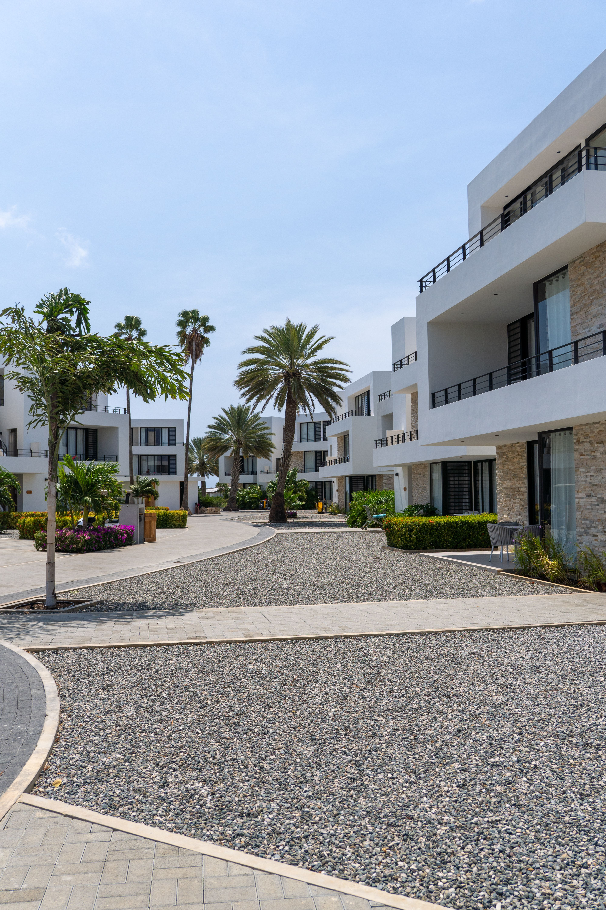

Good to Know
Frequently Requested Information


- Power outlets are 120 volts (the same as in the United States).
- Alcohol is not allowed to be served or sold between the hours of midnight and 9:00 a.m.
- The drinking age on Taniti is 18 and the drinking age is not strictly enforced.
- Many younger Tanitians speak fluent English. Very little English is spoken in rural areas, especially by the older residents.
- There is one hospital and several clinics. The hospital has many multilingual employees.
- Violent crime is very rare on Taniti, but as tourism increases, there are more reports of pickpocketing and other petty crimes.
- Taniti enjoys a large number of national holidays, and many tourist attractions and restaurants will be closed on holidays, so visitors should plan accordingly.
- Taniti uses the U.S. dollar as its currency, but many businesses will also accept euros and yen. Several banks facilitate currency exchange, and many businesses accept major credit cards.